In this module, we examine how simple linear regression can be applied to datasets where our predictor variable is discrete or categorical rather than continuous. Indeed, we will see that One-Way (and Two-Way) Analysis of Variance (ANOVA) is a specific application of simple (and multiple) linear regression. We also look at other methods for basic statistical analysis of categorical data.
Thus far we have used simple linear regression models involving continuous explanatory variables, but we can also use a discrete or categorical explanatory variable, made up of 2 or more groups that are coded as “factors” (i.e., we use integer values from 1 to \(k\) discrete groups as dummy values for our categorical variables). Let’s load in our zombie apocalpyse survivor data again, but this time after doing so, we will convert gender and major to factors using the function as.factor(). [We could also do this by reading the data in using read.csv(), which has as a default argument stringsAsFactors=TRUE.] Then look at the class() and summary() of the variable gender.
f <-"https://raw.githubusercontent.com/difiore/ada-2024-datasets/main/zombies.csv"z <-read_csv(f, col_names =TRUE)
## Rows: 1000 Columns: 10
## ── Column specification ────────────────────────────────────────────────────────
## Delimiter: ","
## chr (4): first_name, last_name, gender, major
## dbl (6): id, height, weight, zombies_killed, years_of_education, age
##
## ℹ Use `spec()` to retrieve the full column specification for this data.
## ℹ Specify the column types or set `show_col_types = FALSE` to quiet this message.
z$gender <-factor(z$gender) # can also use `as.factor()`z$major <-factor(z$major) # can also use `as.factor()`class(z$gender)
## [1] "factor"
summary(z$gender)
## Female Male
## 494 506
As with our prior simple regression analysis, we want to evaluate the effect of a predictor variable on a response variable (e.g., height), but this time we want our predictor to be a discrete, or categorical, variable (e.g., gender) rather than a continuous one. We can start off by plotting height by gender using the same formula notation we have been using.
plot(z$height ~ z$gender)
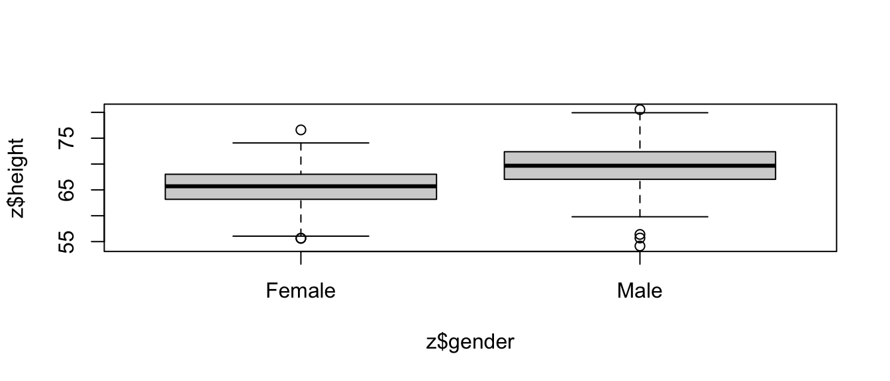
# or, with {ggplot}ggplot(data = z, aes(x = gender, y = height)) +geom_boxplot()
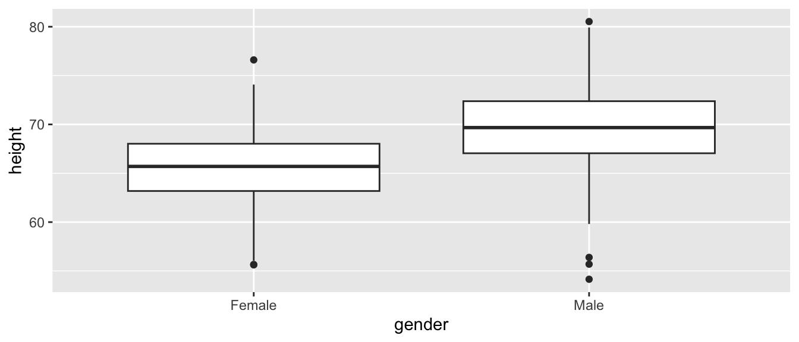
This immediately gives us a nice boxplot. Note that if we’d try to use this command after loading in gender as character rather than factor data, R would have thrown an error.
Based on our plot, there indeed seems to be a difference in height between males and females. We can test this directly using linear regression (and, recall, we already know another way to test this, using \(Z\) or t tests to compare means).
m <-lm(data = z, height ~ gender)
If we take a look at the summary() of our model, m, we see the same kind of table of results we have seen before, but because the predictor variable in this case is a factor vector instead of a numeric vector, the coefficients are reported and interpreted a bit differently.
summary(m)
##
## Call:
## lm(formula = height ~ gender, data = z)
##
## Residuals:
## Min 1Q Median 3Q Max
## -15.4642 -2.4861 0.0876 2.5425 11.0065
##
## Coefficients:
## Estimate Std. Error t value Pr(>|t|)
## (Intercept) 65.5983 0.1717 382.13 <2e-16 ***
## genderMale 4.0154 0.2413 16.64 <2e-16 ***
## ---
## Signif. codes: 0 '***' 0.001 '**' 0.01 '*' 0.05 '.' 0.1 ' ' 1
##
## Residual standard error: 3.815 on 998 degrees of freedom
## Multiple R-squared: 0.2172, Adjusted R-squared: 0.2164
## F-statistic: 276.9 on 1 and 998 DF, p-value: < 2.2e-16
The coefficient for the intercept, i.e., \(\beta_0\), reflects the estimate of the mean height for the first of our level variables.
levels(z$gender)
## [1] "Female" "Male"
The estimate for \(\beta_1\) is reported as “genderMale” and the value for that coefficient, 4.0154, is the estimated difference in mean height associated with being a male. The regression equation is basically:
\[height = 65.5983 + 4.0154 \times gender\]
with males assigned a gender value of 1 and females of 0.
In this case, the p value associated with the t statistic for \(\beta_1\) is extremely low, so we conclude that gender has a significant effect on height.
We can easily relevel() what is the baseline group. The result is very similar, but the sign of \(\beta_1\) is changed.
##
## Call:
## lm(formula = height ~ gender, data = z)
##
## Residuals:
## Min 1Q Median 3Q Max
## -15.4642 -2.4861 0.0876 2.5425 11.0065
##
## Coefficients:
## Estimate Std. Error t value Pr(>|t|)
## (Intercept) 69.6137 0.1696 410.42 <2e-16 ***
## genderFemale -4.0154 0.2413 -16.64 <2e-16 ***
## ---
## Signif. codes: 0 '***' 0.001 '**' 0.01 '*' 0.05 '.' 0.1 ' ' 1
##
## Residual standard error: 3.815 on 998 degrees of freedom
## Multiple R-squared: 0.2172, Adjusted R-squared: 0.2164
## F-statistic: 276.9 on 1 and 998 DF, p-value: < 2.2e-16
The last line of the summary() output shows the results of the global test of significance of the regression model based on an F statistic compared to an F distribution with, in this case, 1 and 998 degrees of freedom.
p <-1-pf(q =276.9, df1 =1, df2 =998)p
## [1] 0
We can extend this approach to the case where we have more than two categories for a variable… in this case we need to dummy code our factor variable into multiple binary variables. R takes care of this for us automatically, but it is good to recognize the procedure.
Let’s explore this by re-coding the variable major into four levels. We can first use the unique() or levels() function to list all of the different majors in our dataset. The latter does this alphabetically.
Again, we can plot our variable by group and run a multilevel linear regression. Each \(\beta\) estimate reflects the difference from the estimated mean for the reference level. The lm() function also returns the results of the global significance test of our model.
plot(data = z, zombies_killed ~ occupation)
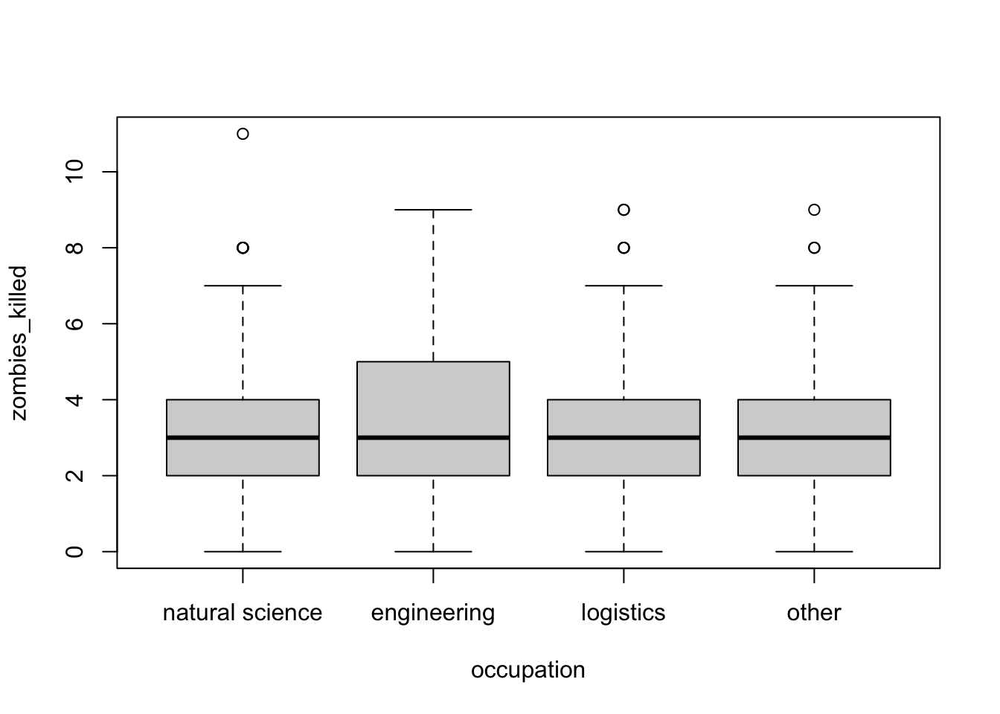
m <-lm(data = z, zombies_killed ~ occupation)summary(m)
##
## Call:
## lm(formula = zombies_killed ~ occupation, data = z)
##
## Residuals:
## Min 1Q Median 3Q Max
## -3.3061 -1.0068 -0.0068 1.0092 8.0974
##
## Coefficients:
## Estimate Std. Error t value Pr(>|t|)
## (Intercept) 2.90256 0.08848 32.804 <2e-16 ***
## occupationengineering 0.40356 0.19745 2.044 0.0412 *
## occupationlogistics 0.08826 0.14777 0.597 0.5504
## occupationother 0.10424 0.13496 0.772 0.4401
## ---
## Signif. codes: 0 '***' 0.001 '**' 0.01 '*' 0.05 '.' 0.1 ' ' 1
##
## Residual standard error: 1.747 on 996 degrees of freedom
## Multiple R-squared: 0.004209, Adjusted R-squared: 0.00121
## F-statistic: 1.403 on 3 and 996 DF, p-value: 0.2403
p <-1-pf(q =0.489, df1 =3, df2 =996) # F testp
## [1] 0.6899872
In this case, we see no significant effect of occupation (based on a broad categorization of college major) on zombie killing proficiency.
20.4 One-Way ANOVA
Regression with a single categorical predictor run as we have just done above is exactly equivalent to a “One-Way” or “one-factor” Analysis of Variance, or ANOVA. That is, ANOVA is just one type of special case of least squares regression.
We can, of course, run an ANOVA with one line in R. Compare the results presented in the summary() output table (or tidy() output table) from an ANOVA with that from the global test reported in summary() (or tidy()) from lm()
par(mfrow =c(2, 2))plot(m.lm) # plot(m.aov) is equivalent
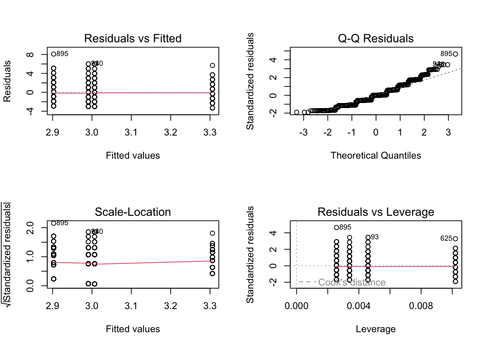
These two model summaries produce somewhat different tables for the same analysis. The F statistic and omnibus p value given in the aov() ANOVA table indicates whether there are differences between at least some treatments, but we do not know where those differences occur. The summary from lm() shows the effects of the categorical treatments arranged as sequential contrasts (the default in R). The first row gives the mean of the first level of the first factor specified in the model. The following rows give differences from this first mean for each subsequent factor level. Likewise the standard error in the first row is a standard error of a mean, while the entries in subsequent rows are standard errors of the differences between two means.
In general, in ANOVA and simple regression using a single categorical variable, we aim to test the \(H_0\) that the means of a variable of interest do not differ among groups, i.e., that \(\mu_1 = \mu_2 = ... = \mu_k\) are all equal. This is an extension of our comparison of two means that we did with z and t tests.
The basic linear model formulation for ANOVA is:
\[Y_{i,j} = \mu + \beta_i X_i + \epsilon_{i,j}\]
where:
\(\mu\) is the grand (overall) population mean
\(\beta_i\) is the deviation of the mean of treatment level \(i\) from the grand mean
\(\epsilon_{i,j}\) is error variance of individual points, \(j\), within each level, \(i\), from the grand mean
The assumptions of ANOVA, similar to those of simple regression, are:
that samples are independent and identically distributed (\(iid\))
that the residuals, \(\epsilon_{i,j}\), are normally distributed
that within-group variances are similar across all groups (“homoscedastic”)
Additionally, the following assumption of standard ANOVA makes the interpretation of results more straightforward, but it is not strictly required…
that our experiment/observations have a balanced design (i.e., an equal number of cases in all groups)
If this last assumption is violated, it ceases to be true that the total SS of our dataset = within group SS + between group SS, and then the calculations of our MSE and the F statistic, and our associated p value, would be off.
20.5 Simulation-Based Inference
Note that the ANOVA functions used above (aov(), lm()) are evaluating statistical significance and estimating p values based on mathematical theory, i.e., by comparing F statistic values to a theoretical, parametric \(F\) distribution to determine how likely we are to see an F statistic as extreme as our observed one by chance under the null model of no difference between groups. However, as with other tests of statistical inference, we can also use permutation/randomization methods to determine p values for ANOVA.
One easy way to do this is with the {infer} package. Using {infer}, we can easily permute, a large number of times, the association between our response variable the categorical explanatory variable and, each time, then calculate the associated F statistic. This generates a permutation-based null distribution of F statistics to which we can compare the F statistic generated from our original data. The permutation-based p value is then the proportion of F statistic values generated by simulation that are equal to or greater than our observed F statistic value.
original.F <-aov(data = z, zombies_killed ~ occupation) %>%tidy() %>%filter(term=="occupation")# show aov results for F statistic and p value for omnibus F testoriginal.F
permuted.F <- z %>%specify(zombies_killed ~ occupation) %>%# specify modelhypothesize(null ="independence") %>%# null hypothesis of independencegenerate(reps =1000, type ="permute") %>%# generate permutationscalculate(stat ="F") # calculate the F statistic for the AOV# plot our F statistic on the distribution of F statistic values# generated by permutationvisualize(permuted.F) +shade_p_value(obs_stat=original.F$statistic, direction="greater")
## Warning in (function (mapping = NULL, data = NULL, stat = "identity", position = "identity", : All aesthetics have length 1, but the data has 1000 rows.
## ℹ Did you mean to use `annotate()`?
Note that, for these data, the p value estimated through simulated based inference is very similar to that calculated paramterically based on mathematical theory. This is not always the case!
Alternatively, the {permuco} package introduces the aovperm() and lmperm() functions as analogs for aov() and lm() for analysis of variance and simple linear regression, where p values are calculated by permutation.
## Table of marginal t-test of the betas
## Resampling test using freedman_lane to handle nuisance variables and 5000 permutations.
## Estimate Std. Error t value parametric Pr(>|t|)
## (Intercept) 2.90256 0.08848 32.8042 1.269e-160
## occupationengineering 0.40356 0.19745 2.0439 4.123e-02
## occupationlogistics 0.08826 0.14777 0.5973 5.504e-01
## occupationother 0.10424 0.13496 0.7724 4.401e-01
## resampled Pr(<t) resampled Pr(>t) resampled Pr(>|t|)
## (Intercept)
## occupationengineering 0.9788 0.0214 0.0396
## occupationlogistics 0.7190 0.2812 0.5580
## occupationother 0.7766 0.2236 0.4524
detach(package:permuco)
Similar to {infer}, the {coin} package also implements permutation-based tests of independence, including One-Way ANOVA. Instead of F statistics, the test statistic implemented in {coin} is a Chi-Square statistic (which is essentially to equivalent to an F statistic, normalized by the residual degrees of freedom), and it is tested against a permutation-based null distribution of Chi-Square values.
library(coin)m.aov <-oneway_test(data = z, zombies_killed ~ occupation, distribution ="approximate")# by default, 10000 replicates are usedm.aov
Load in the “gibbon-femurs.csv” dataset, which contains the lengths, in centimeters, of the femurs of 400 juvenile, subadult, and adult individuals gibbons. Use both ANOVA and simple linear regression to examine the relationship between age and femur length.
f <-"https://raw.githubusercontent.com/difiore/ada-2024-datasets/main/gibbon-femurs.csv"d <-read_csv(f, col_names =TRUE)
## Rows: 525 Columns: 4
## ── Column specification ────────────────────────────────────────────────────────
## Delimiter: ","
## chr (2): age, sex
## dbl (2): id, femur_length
##
## ℹ Use `spec()` to retrieve the full column specification for this data.
## ℹ Specify the column types or set `show_col_types = FALSE` to quiet this message.
d$age <-factor(d$age, levels =c("inf", "juv", "subadult", "adult"))# converts age to a factor and order the age levels so that they are in# ascending chronological order several ANOVA functions require that# categorical variables are represented as factors rather than stringsd$sex <-factor(d$sex, levels =c("female", "male"))# convert sex to a factorhead(d)
## # A tibble: 6 × 4
## id age sex femur_length
## <dbl> <fct> <fct> <dbl>
## 1 1 inf female 7.28
## 2 2 inf male 6.3
## 3 3 inf female 7.44
## 4 4 inf male 8.69
## 5 5 inf female 9.13
## 6 6 inf male 9.28
Before beginning, check for normality of data overall…
Then, do a boxplot of the data by each age group and check for normality within each group.
Show Code
plot(data = d, femur_length ~ age) # boxplot with medians# calculate average and SD by groupstats <- d %>%group_by(age) %>%summarize(`mean(femur_length)`=mean(femur_length), `sd(femur_length)`=sd(femur_length))# add means to plotpoints(1:4, stats$`mean(femur_length)`, pch =4, cex =1.5)
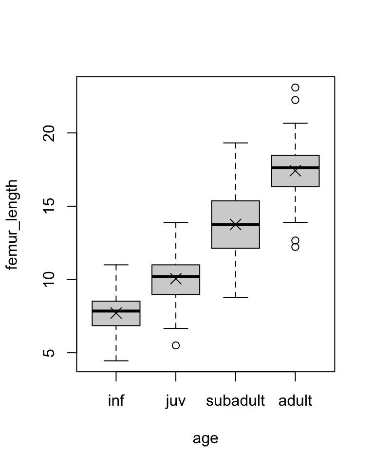
Show Code
# subtract relevant group mean from each data pointmeans.centered <- d$femur_length - stats[as.numeric(d$age), 2]# graphical test for normality of group-centered meansqqnorm(means.centered$`mean(femur_length)`) # looks good!
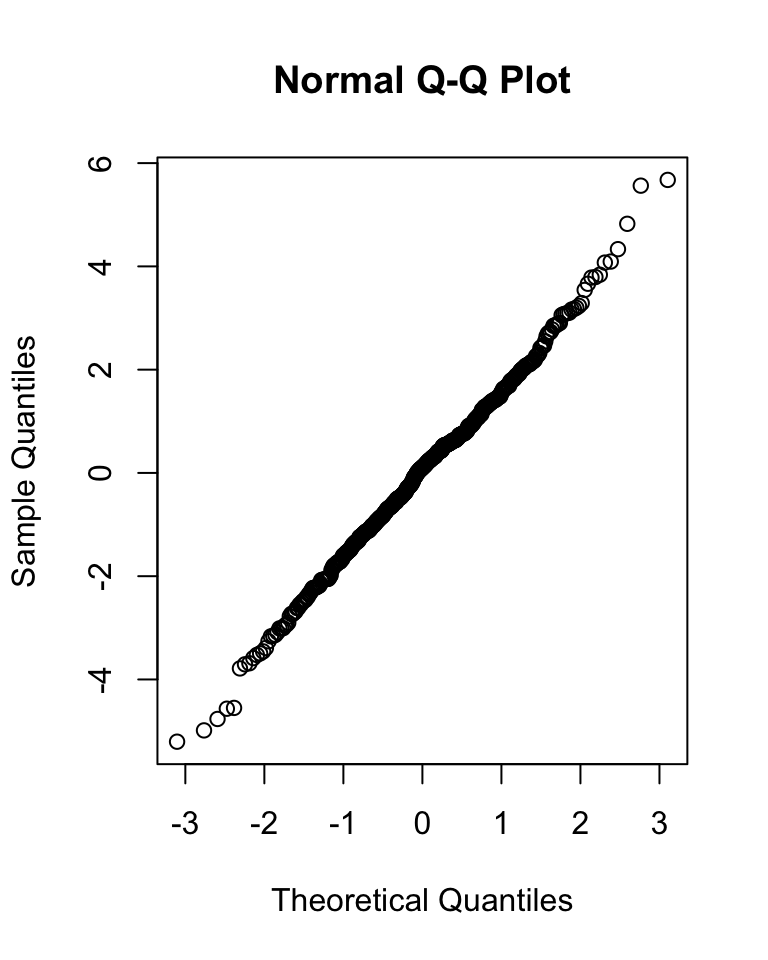
Show Code
# now do graphical test within each grouppar(mfrow =c(1, 2))hist(d$femur_length[d$age =="inf"], main ="Infant", xlab ="Femur Length (cm)")qqnorm(d$femur_length[d$age =="inf"])
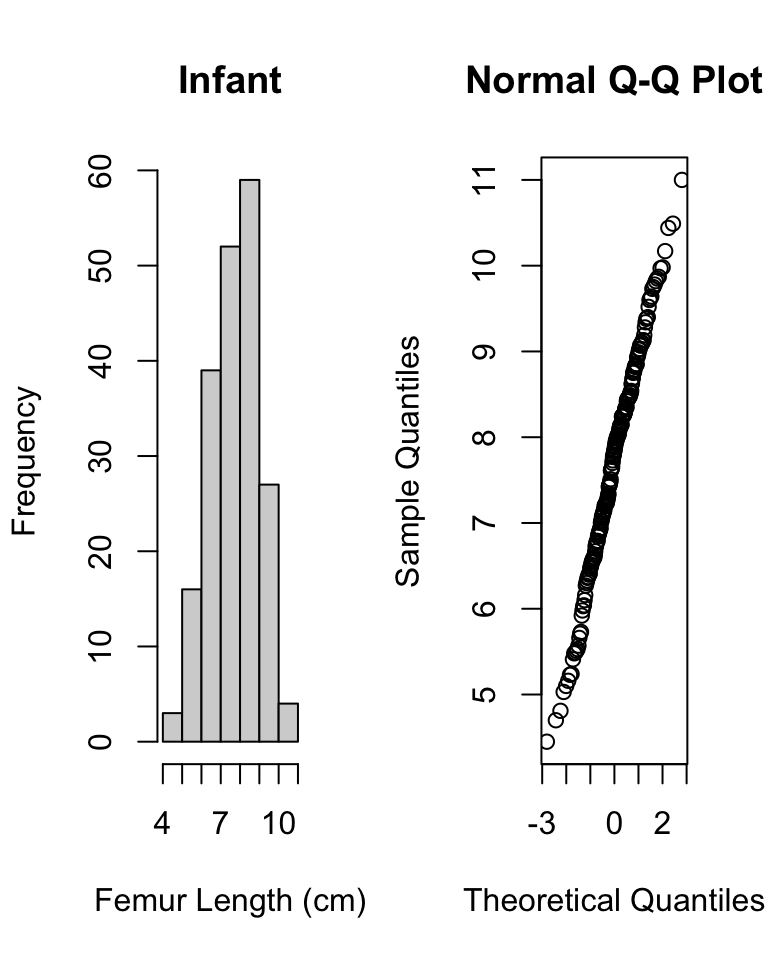
Show Code
hist(d$femur_length[d$age =="juv"], main ="Juvenile", xlab ="Femur Length (cm)")qqnorm(d$femur_length[d$age =="juv"])
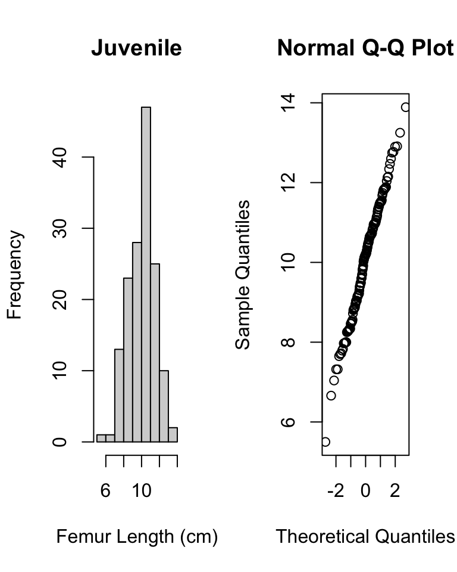
Show Code
hist(d$femur_length[d$age =="subadult"], main ="Subadult", xlab ="Femur Length (cm)")qqnorm(d$femur_length[d$age =="subadult"])
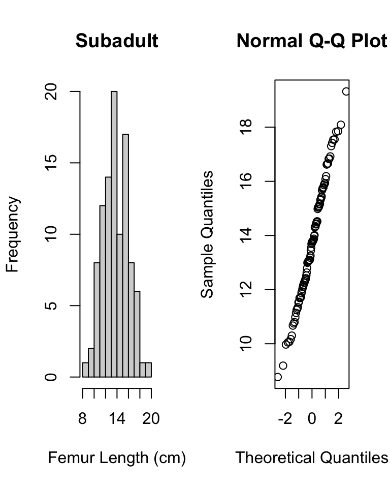
Show Code
hist(d$femur_length[d$age =="adult"], main ="Adult", xlab ="Femur Length (cm)")qqnorm(d$femur_length[d$age =="adult"])
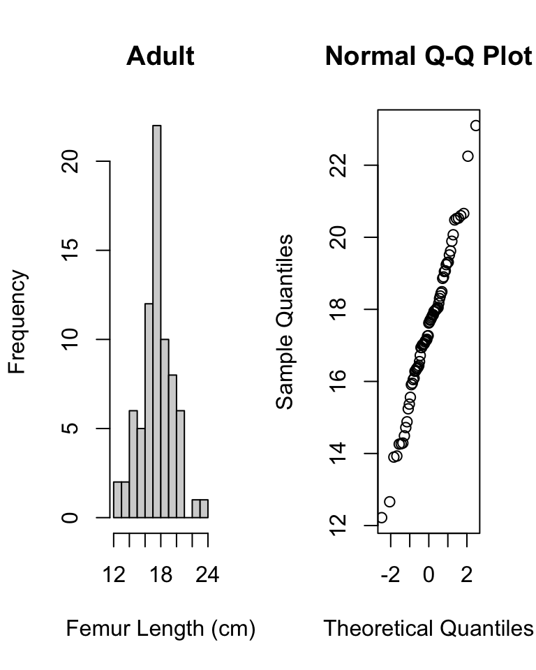
Also, check whether the different groups have roughly equal variances. As a general rule of thumb, we can compare the largest and smallest within-group standard deviations; if the ratio of max-to-min is less, than 2 then the assumption of “equal” variances is usually reasonable.
Show Code
# check that variances are roughly equal (ratio of max/min is <2)max(stats$`sd(femur_length)`)/min(stats$`sd(femur_length)`)
Show Output
## [1] 1.767635
All this checking done, we can again plot our data by group and then run our ANOVA model…
Is the omnibus test of the relationship between age category and femur length significant? YES! Are femur lengths significantly different for juveniles versus subadults? Subadults versus adults? Juveniles versus adults?
HINT: To test some of these additional bivariate options, you will need to relevel() your factors for simple linear regression. Currently, we are just testing each group relative to the first level of the factor age.
20.6 Post-Hoc Tests in ANOVA
After finding a significant omnibus F statistic in an ANOVA, we can test, post-hoc, what group means are different from one another using pairwise t tests with an appropriate p value correction for multiple tests.
##
## Pairwise comparisons using t tests with pooled SD
##
## data: d$femur_length and d$age
##
## inf juv subadult
## juv <2e-16 - -
## subadult <2e-16 <2e-16 -
## adult <2e-16 <2e-16 <2e-16
##
## P value adjustment method: bonferroni
After an ANOVA, we can also use a Tukey Honest Significant Differences test with the model as the argument to evaluate this.
NOTE: The TukeyHSD() function is run on the output of the ANOVA (aov()) function.
# renaming age categories so we get nice axis labels on plot...d <- d %>%mutate(age =case_when(age =="adult"~"A", age =="subadult"~"S", age =="juv"~"J", age =="inf"~"I"))m <-aov(femur_length ~ age, data = d)posthoc <-TukeyHSD(m, which ="age", ordered =TRUE, conf.level =0.95)posthoc # all age-sex classes differ
We can get a visual summary of difference in means between each group and their confidence intervals by passing the Tukey test output to a plot() function. Confidence intervals that cross the vertical line indicate pairs of groups where the difference in mean is not significant, according to the threshold we set.
plot(posthoc, xlim =c(-2, 12)) # xlim set to show zero
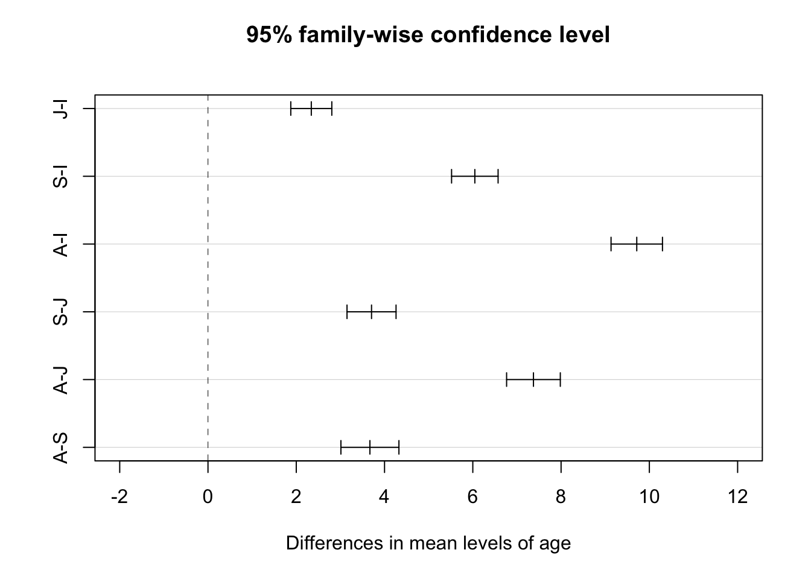
20.7 A Non-Parametric Alternative
The Kruskal-Wallis test is a nonparametric alternative to One-Way ANOVA that relaxes the need for normality in the distribution of data in each group (the different groups should still have roughly equal variances). Essentially, rather than testing the null hypothesis that the means for each group do not differ we are instead testing the null hypothesis that the medians do not differ. The test converts the continuous response variable to a set of RANKS (i.e., it does a uniform transformation) and then works with those ranks. The p value associated with the Kruskall-Wallis test statistic is calculated mathematically relative to a Chi-Square distribution.
(m <-kruskal.test(data = d, femur_length ~ age))
##
## Kruskal-Wallis rank sum test
##
## data: femur_length by age
## Kruskal-Wallis chi-squared = 407.13, df = 3, p-value < 2.2e-16
# to show that this is the same as the test using ranks... use {dplyr} to sort# by femur.length...d <-arrange(d, femur_length)# then use {dplyr} to add new variable of rank femur_lengthd <-mutate(d, femur_rank =row(data.frame(d$femur_length)))(m <-kruskal.test(data = d, femur_rank ~ age))
##
## Kruskal-Wallis rank sum test
##
## data: femur_rank by age
## Kruskal-Wallis chi-squared = 407.43, df = 3, p-value < 2.2e-16
For a post-hoc test of which groups are different following a Kruskall-Wallis test, we can use either a pairwise Mann-Whitney U test, a Dunn test, or a Conover-Iman test. The latter two tests are implemented using dunn.test() from the {dunn.test} package or conover.test() from the {conover.test} package, which both allow us to show the calculated Krusal-Wallis test statistic as well.
# pairwise Mann-Whitney U test the arguments are a vector of data, a vector# with the grouping factor, and the multiple test correction method...pairwise.wilcox.test(d$femur_length, d$age, p.adjust.method ="bonferroni")
##
## Pairwise comparisons using Wilcoxon rank sum test with continuity correction
##
## data: d$femur_length and d$age
##
## A I J
## I <2e-16 - -
## J <2e-16 <2e-16 -
## S <2e-16 <2e-16 <2e-16
##
## P value adjustment method: bonferroni
# `dunn.test()` and `conover.test()` include another argument, `kw=` which is# whether or not to output KW resultslibrary(dunn.test)dunn.test(d$femur_length, g = d$age, method ="bonferroni", kw =TRUE)
## Kruskal-Wallis rank sum test
##
## data: x and group
## Kruskal-Wallis chi-squared = 407.1264, df = 3, p-value = 0
##
##
## Comparison of x by group
## (Bonferroni)
## Col Mean-|
## Row Mean | A I J
## ---------+---------------------------------
## I | 17.43010
## | 0.0000*
## |
## J | 10.06368 -8.673333
## | 0.0000* 0.0000*
## |
## S | 3.468151 -14.94416 -6.920645
## | 0.0016* 0.0000* 0.0000*
##
## alpha = 0.05
## Reject Ho if p <= alpha/2
detach(package:dunn.test)library(conover.test)conover.test(d$femur_length, g = d$age, method ="bonferroni", kw =TRUE)
## Kruskal-Wallis rank sum test
##
## data: x and group
## Kruskal-Wallis chi-squared = 407.1264, df = 3, p-value = 0
##
##
## Comparison of x by group
## (Bonferroni)
## Col Mean-|
## Row Mean | A I J
## ---------+---------------------------------
## I | 36.80108
## | 0.0000*
## |
## J | 21.24798 -18.31245
## | 0.0000* 0.0000*
## |
## S | 7.322488 -31.55238 -14.61191
## | 0.0000* 0.0000* 0.0000*
##
## alpha = 0.05
## Reject Ho if p <= alpha/2
detach(package:conover.test)
20.8 Multiple Factor ANOVA
Sometimes the data we are interested in is characterized by multiple grouping variables (e.g., age and sex). In the case of the gibbon femur length data, we are interested in the main effect of each factor on the variable of interest (e.g., do femur lengths vary by age or sex) while accounting for the effects of the other factor. We may also be interested in any interactive effects among factors. Thus, in multiple factor ANOVA we are interested in testing several null hypotheses simultaneously: [1] that each factor has no effect on the mean of our continuous response variable and [2] that there are no interactive effects of sets of factors on the mean of our continuous response variable.
Model description and testing for multiple-factor ANOVA is a simple extension of the formula notation which we’ve used for single factors. First, though, let’s quickly check that our groups have similar variance.
stats <- d %>%group_by(age, sex) %>%summarize("mean(femur_length)"=mean(femur_length),"sd(femur_length)"=sd(femur_length))# first we calculate averages by combination of factorsmax(stats$`sd(femur_length)`)/min(stats$`sd(femur_length)`)
## [1] 1.882171
# check that variances in each group are roughly equal (ratio of max/min is <2)p <-ggplot(data=d, aes(y = femur_length, x = sex)) +geom_boxplot() +facet_wrap(~age, ncol=4) +xlab("Sex") +ylab("Femur Length (cm)")# and let's plot what the data look like# p <- p + geom_point() # uncommenting this shows all pointsp <- p +stat_summary(data=d, aes(y = femur_length, x = sex),fun = base::mean,# make sure we use {base} version of meancolor ="darkgreen", geom ="point", shape =8, size =6)p
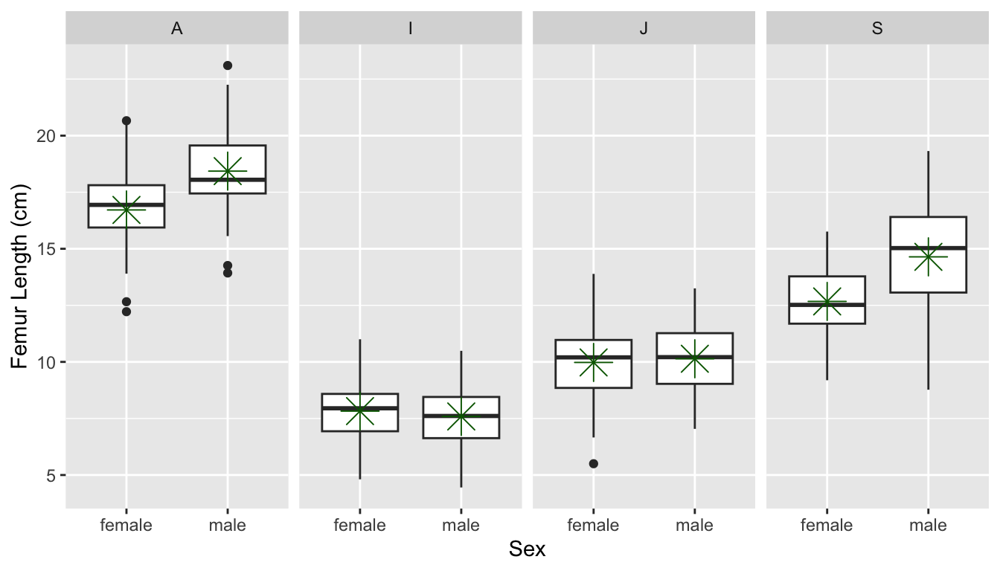
If we look at each variable separately using ANOVA, we see there is an effect of age but not of sex.
summary(aov(data = d, femur_length ~ age))
## Df Sum Sq Mean Sq F value Pr(>F)
## age 3 6152 2050.6 735.8 <2e-16 ***
## Residuals 521 1452 2.8
## ---
## Signif. codes: 0 '***' 0.001 '**' 0.01 '*' 0.05 '.' 0.1 ' ' 1
summary(aov(data = d, femur_length ~ sex))
## Df Sum Sq Mean Sq F value Pr(>F)
## sex 1 28 28.33 1.956 0.163
## Residuals 523 7576 14.48
However, if we do a Two-Way ANOVA and consider the factors together, we see that there is still a main effect of age when taking sex into account and there is a main effect of sex when we take age into account.
m <-summary(aov(data = d, femur_length ~ age + sex))m
## Df Sum Sq Mean Sq F value Pr(>F)
## age 3 6152 2050.6 756.4 < 2e-16 ***
## sex 1 42 42.3 15.6 8.89e-05 ***
## Residuals 520 1410 2.7
## ---
## Signif. codes: 0 '***' 0.001 '**' 0.01 '*' 0.05 '.' 0.1 ' ' 1
To examine whether there is an interaction effect, we would modify our model formula a bit using the colon operator (:) to specify a particular interaction term…
m <-aov(data = d, femur_length ~ age + sex + age:sex)# the colon (:) operator includes specific interaction termssummary(m)
## Df Sum Sq Mean Sq F value Pr(>F)
## age 3 6152 2050.6 816.35 < 2e-16 ***
## sex 1 42 42.3 16.84 4.72e-05 ***
## age:sex 3 111 37.0 14.73 3.21e-09 ***
## Residuals 517 1299 2.5
## ---
## Signif. codes: 0 '***' 0.001 '**' 0.01 '*' 0.05 '.' 0.1 ' ' 1
We could also use the asterisk (*) operator, which expands to include all interactions among terms, including 3-way, 4-way, etc., interactions.
m <-aov(data = d, femur_length ~ age * sex)# asterisk (*) operator includes all interaction termssummary(m)
## Df Sum Sq Mean Sq F value Pr(>F)
## age 3 6152 2050.6 816.35 < 2e-16 ***
## sex 1 42 42.3 16.84 4.72e-05 ***
## age:sex 3 111 37.0 14.73 3.21e-09 ***
## Residuals 517 1299 2.5
## ---
## Signif. codes: 0 '***' 0.001 '**' 0.01 '*' 0.05 '.' 0.1 ' ' 1
m <-lm(data = d, femur_length ~ age * sex)# or using the lm() function...summary(m)
We can use the function interaction.plot() to visualize interactions among categorical variables.
interaction.plot(x.factor = d$age,xlab ="Age",trace.factor = d$sex,trace.label ="Sex",response = d$femur_length,fun = base::mean, # make sure we use {base} versionylab ="Mean Femur Length")
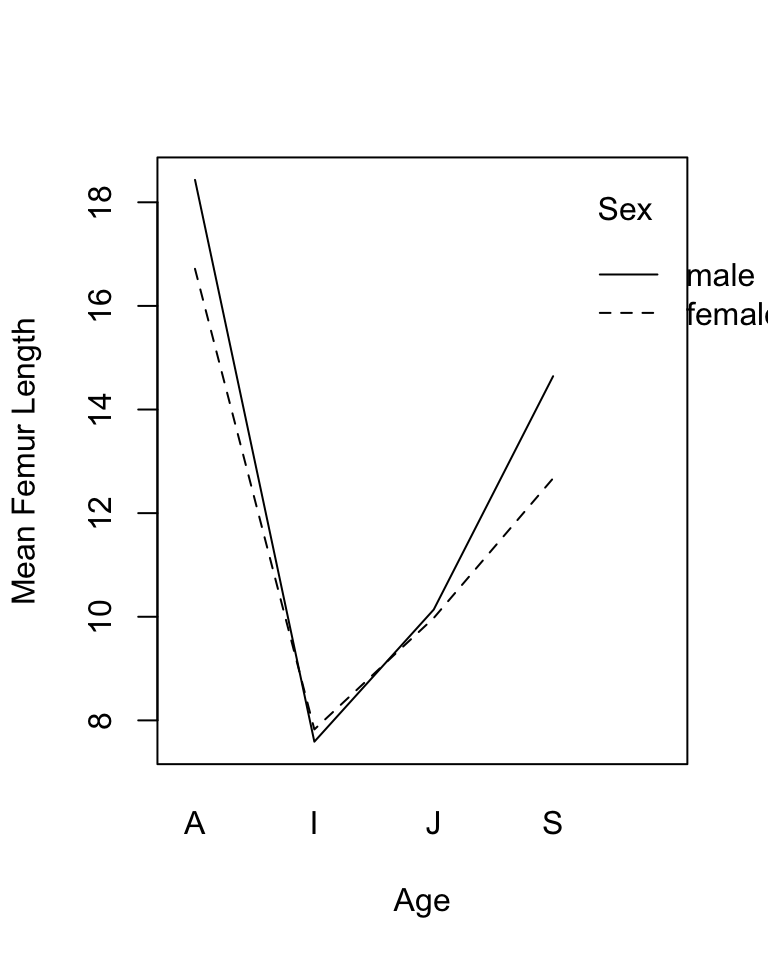
Here, it looks like there is indeed a significant main effect of each term as well as an interaction between our two categorical variables. We will return to comparing models to one another (e.g., our model with and without interactions) and to post-hoc tests of what group mean differences are significant when we get into model selection in another few lectures.
When we do summary() of the results of the lm() function, we are estimating eight \(\beta\) coefficients (equivalent to the number of groups we have). \(\beta_0\), the intercept, is the mean femur length for the base level (in this case, “adult females”). Then we have coefficients showing how the different factor combination groups would differ from that base level (e.g., adult males have mean femur lengths 1.716 greater than adult females, etc).
The {permuco} package also lets us run multiple factor ANOVA using permutation/randomization to estimate p values.
library(permuco)m.aovperm <-aovperm(data = d, femur_length ~ age + sex + age:sex)summary(m.aovperm)
## Anova Table
## Resampling test using freedman_lane to handle nuisance variables and 5000 permutations.
## SS df F parametric P(>F) resampled P(>F)
## age 6136.3 3 814.28 0.000e+00 2e-04
## sex 91.7 1 36.51 2.914e-09 2e-04
## age:sex 111.0 3 14.73 3.210e-09 2e-04
## Residuals 1298.7 517
detach(package:permuco)
20.9 Type I, II, and III ANOVA
It is important to recognize that the ORDER in which our factors are entered into a linear model using categorical predictors can result in different values for the entries in our ANOVA table, while the estimation of our regression coefficients is identical regardless. Take a look at this example, where the variables age and sex are entered into our ANOVA formula in different orders:
m1 <-aov(data = d, femur_length ~ age + sex)summary(m1)
## Df Sum Sq Mean Sq F value Pr(>F)
## age 3 6152 2050.6 756.4 < 2e-16 ***
## sex 1 42 42.3 15.6 8.89e-05 ***
## Residuals 520 1410 2.7
## ---
## Signif. codes: 0 '***' 0.001 '**' 0.01 '*' 0.05 '.' 0.1 ' ' 1
m2 <-aov(data = d, femur_length ~ sex + age)summary(m2)
## Df Sum Sq Mean Sq F value Pr(>F)
## sex 1 28 28.3 10.45 0.00131 **
## age 3 6166 2055.3 758.13 < 2e-16 ***
## Residuals 520 1410 2.7
## ---
## Signif. codes: 0 '***' 0.001 '**' 0.01 '*' 0.05 '.' 0.1 ' ' 1
m1 <-lm(data = d, femur_length ~ age + sex)summary(m1)
Why is this? In the first model, we are looking at the variance within each age group that is explained by gender while in the second case we are looking at the variance within each gender that is explained by age… but we have different numbers of observations in our different groups. This is known as an unbalanced design.
We can see the unbalanced design by tabulating the cases for each combination of factors.
table(d$sex, d$age)
##
## A I J S
## female 44 103 81 45
## male 31 97 69 55
Recall that ANOVA is based on splitting up the sums of squares, so that for a model like:
By default, the aov() function uses something called Type I Sums of Squares (also called “sequential sum of squares”), which gives greater emphasis to the first factor in the model, leaving only residual variation to the remaining factors. It should be used when you want to first control for one factor, leaving the others to explain only any remaining differences. In a Type I ANOVA, the sums of squares for the first term are calculated around the grand mean of our observations, but the next terms are calculated as residuals around the average of the grand mean and the first group mean. This sequential procedure means our results depend on which term shows up first. This can have a marked effect on the sums of squares calculated, and hence on p values, when using an unbalanced design.
By contrast, what are know as Type II and Type III Sums of Squares both calculate the deviations between the individual observations within each group from the grand mean rather than the group mean.
Type II Sum of Squares compares the main effects of each factor, assuming that the interaction between factors is minimal. Generally it is a much more appropriate test for comparing among different main effects and is more appropriate for us to use when there is an unbalanced design.
Type III Sum of Squares (or “marginal sum of squares”) is most appropriate when there is a significant interaction effect between factors. Since both Type II and Type III ANOVA calculate sums of squares around the grand mean, these are unaffected by different sample sizes across different categorical groups and do not arbitrarily give preference to one effect over another.
To summarize:
When our data are balanced, our factors are orthogonal, and all three types of sums of squares give the same results.
If our data are strongly unbalanced, we should generally be using Type II or Type III Sums of Squares, since we are generally interested in exploring the significance of one factor while controlling for the level of the other factors.
In general, if there is no significant interaction effect between factors, then Type II is more powerful than Type III.
If an important interaction is present, then Type II analysis is inappropriate, while Type III analysis can still be used, but the results need to be interpreted with caution (in the presence of interactions, individual main effects of different factors difficult to interpret).
We can use the Anova() function in the {car} package to run ANOVA with Type II and Type III Sums of Squares. In the examples below, both linear models, where the order of factors are reversed, give the same results for Type II and Type III. The Anova() function takes as its argument a model object, e.g., the result from a call to either lm() or aov().
library(car)
## Loading required package: carData
##
## Attaching package: 'car'
## The following object is masked from 'package:dplyr':
##
## recode
## The following object is masked from 'package:purrr':
##
## some
m1 <-aov(data = d, femur_length ~ age + sex)m1 <-Anova(m1, type ="II")m1
## Anova Table (Type II tests)
##
## Response: femur_length
## Sum Sq Df F value Pr(>F)
## age 6165.8 3 758.126 < 2.2e-16 ***
## sex 42.3 1 15.604 8.888e-05 ***
## Residuals 1409.7 520
## ---
## Signif. codes: 0 '***' 0.001 '**' 0.01 '*' 0.05 '.' 0.1 ' ' 1
m2 <-aov(data = d, femur_length ~ sex + age)m2 <-Anova(m2, type ="II")m2
## Anova Table (Type II tests)
##
## Response: femur_length
## Sum Sq Df F value Pr(>F)
## sex 42.3 1 15.604 8.888e-05 ***
## age 6165.8 3 758.126 < 2.2e-16 ***
## Residuals 1409.7 520
## ---
## Signif. codes: 0 '***' 0.001 '**' 0.01 '*' 0.05 '.' 0.1 ' ' 1
m1 <-aov(data = d, femur_length ~ age * sex)m1 <-Anova(m1, type ="III")m1
One additional type of categorical data we will often encounter are counts of observations that fall into two or more categories (when we were dealing with \(Z\) tests for proportion data, we were interested in something similar, though with two categories only). We can use Chi-Square tests to evaluate statistically the distribution of observations across levels of one or more categorical variables. To use the Chi-Square test we first derive a Chi-Squarestatistic (\(\chi^2\)) , which is calculated as…
\(O_i\) = number of observations in the \(i\)th category
\(E_i\) = number of observations in the \(i\)th category
We then compare the value of the \(\chi^2\) statistic to the Chi-Square distribution with \(k-1\) degrees of freedom. The Chi-Square distribution, like the \(F\) distribution, is a continuous probability distribution, defined for \(x≥0\). It is governed by a single parameter, \(df\).
par(mfrow =c(1, 1))curve(dchisq(x, df =1), col ="green", lty =3, lwd =2, xlim =c(0, 20), main ="Some Example Chi-Square Distributions",sub ="(vertical line shows critical value for df=3)", ylab ="f(x)", xlab ="x")curve(dchisq(x, df =3), col ="blue", lty =3, lwd =2, add =TRUE)curve(dchisq(x, df =5), col ="red", lty =3, lwd =2, add =TRUE)curve(dchisq(x, df =10), col ="purple", lty =3, lwd =2, add =TRUE)legend("right", c("df=1", "df=3", "df=5", "df=10"), lty =c(3, 3, 3, 3), lwd =2,col =c("green", "blue", "red", "purple", "black"), bty ="n", cex =0.75)crit <-qchisq(p =0.95, df =3)crit
Let’s return to the zombie apocalypse survivors dataset, where we defined an occupation based on major for survivors of the zombie apocalypse. Use a Chi-Square test to evaluate the hypothesis that survivors of the zombie apocalypse are more likely than expected by chance to be natural science majors. Assume that assume our null hypothesis is that the proportions of different post-apocalypse occupations are equivalent, i.e., that \(\pi_{natural science}\) = \(\pi_{engineering}\)= \(\pi_{logistics}\) = \(\pi_{other}\) = 0.25.
# returns the same as summary()(exp.table <-rep(0.25*length(z$occupation), 4))
Show Output
## [1] 250 250 250 250
Show Code
# equal expectation for each of 4 categoriesoccupation.matrix <-data.frame(cbind(obs.table, exp.table, (obs.table - exp.table)^2/exp.table))names(occupation.matrix) <-c("Oi", "Ei", "(Oi-Ei)^2/Ei")occupation.matrix
Show Output
## Oi Ei (Oi-Ei)^2/Ei
## natural science 390 250 78.400
## engineering 98 250 92.416
## logistics 218 250 4.096
## other 294 250 7.744
Show Code
(X2 <-sum(occupation.matrix[, 3]))
Show Output
## [1] 182.656
Show Code
(p <-1-pchisq(q = X2, length(obs.table) -1))
Show Output
## [1] 0
Here, we reject the null hypothesis that the proportions of different occupations among the survivors of the zombie apocalypse is equivalent.
We can do all this with a 1-liner in R, too.
chisq.test(x = obs.table, p =c(0.25, 0.25, 0.25, 0.25))
##
## Chi-squared test for given probabilities
##
## data: obs.table
## X-squared = 182.66, df = 3, p-value < 2.2e-16
# here p is a vector of expected proportions... default is uniformchisq.test(x = obs.table)
##
## Chi-squared test for given probabilities
##
## data: obs.table
## X-squared = 182.66, df = 3, p-value < 2.2e-16
chisq.test(x = obs.table, p =c(0.42, 0.07, 0.22, 0.29))
##
## Chi-squared test for given probabilities
##
## data: obs.table
## X-squared = 13.416, df = 3, p-value = 0.003818
# with a different set of expected proportions... fail to reject H0
The above was a Chi-Square goodness of fit test for one categorical variable… what about if we have two categorical variables and we are curious if there is an association among them? Then we do a Chi-Square test of independence. In this case, our Chi-Square statistic would be the sum of \(\frac{(O-E)^2}{E}\) across all cells in our table, and our degrees of freedom is (number of rows - 1) \(\times\) (number of columns - 1). Let’s suppose we want to see if there is a relationship among zombie apocalypse survivors between gender and occupation.
First, we determine our table of observed proportions:
(obs.table =table(z$gender, z$occupation))
##
## natural science engineering logistics other
## Male 198 49 109 150
## Female 192 49 109 144
We can view our data graphically using the mosaic plot() function.
mosaicplot(t(obs.table), main ="Contingency Table", col =c("darkseagreen", "gray"))
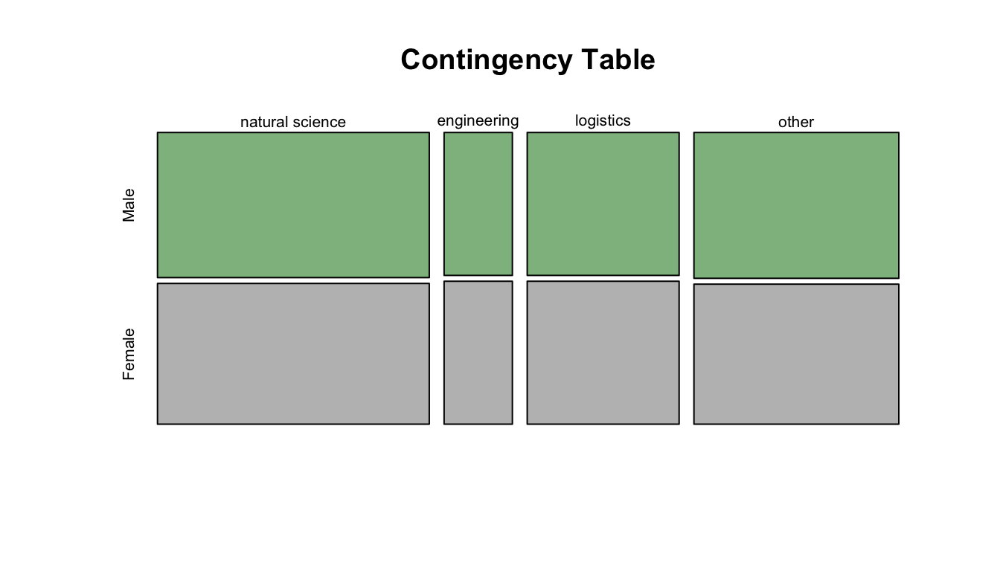
# the `t()` function transposes the table
Then, we determine our table of expected proportions:
ANOVA is conceptually equivalent linear regression, but with one or more categorical predictor variables
ANOVA effectively tests whether the means of different groups are different
The Kruskall-Wallis test is a nonparametric alternative to a One-Way ANOVA that relaxes the need for normality in the distribution of data in each group and tests for a difference in the medians of different groups
ANOVAs should have balanced or roughly balanced numbers of observations within each categorical group
Chi-Square (\(\chi^2\)) goodness-of-fit tests are another type of factor-based categorical data analysis, where we compare between observed and expected counts of observations in different grouping categories for either a single variable or two variables
Source Code
# Categorical Data Analysis {#module-20}## Objectives> In this module, we examine how simple linear regression can be applied to datasets where our predictor variable is discrete or categorical rather than continuous. Indeed, we will see that One-Way (and Two-Way) Analysis of Variance (ANOVA) is a specific application of simple (and multiple) linear regression. We also look at other methods for basic statistical analysis of categorical data.## Preliminaries- Install these packages in ***R***: [{permuco}](https://cran.r-project.org/web/packages/permuco/permuco.pdf), [{dunn.test}](https://cran.r-project.org/web/packages/dunn.test/dunn.test.pdf), [{conover.test}](https://cran.r-project.org/web/packages/conover.test/conover.test.pdf)- Load {tidyverse}, {broom}, and {infer}```{r}#| include: falselibrary(tidyverse)library(broom)library(infer)```## Categorical PredictorsThus far we have used simple linear regression models involving continuous explanatory variables, but we can also use a discrete or categorical explanatory variable, made up of 2 or more groups that are coded as "factors" (i.e., we use integer values from 1 to $k$ discrete groups as dummy values for our categorical variables). Let's load in our zombie apocalpyse survivor data again, but this time after doing so, we will convert **gender** and **major** to factors using the function `as.factor()`. [We could also do this by reading the data in using `read.csv()`, which has as a default argument `stringsAsFactors=TRUE`.] Then look at the `class()` and `summary()` of the variable **gender**.```{r}f <-"https://raw.githubusercontent.com/difiore/ada-2024-datasets/main/zombies.csv"z <-read_csv(f, col_names =TRUE)z$gender <-factor(z$gender) # can also use `as.factor()`z$major <-factor(z$major) # can also use `as.factor()`class(z$gender)summary(z$gender)```As with our prior simple regression analysis, we want to evaluate the effect of a predictor variable on a response variable (e.g., **height**), but this time we want our predictor to be a discrete, or categorical, variable (e.g., **gender**) rather than a continuous one. We can start off by plotting **height** by **gender** using the same formula notation we have been using.```{r}#| fig-height: 3plot(z$height ~ z$gender)# or, with {ggplot}ggplot(data = z, aes(x = gender, y = height)) +geom_boxplot()```This immediately gives us a nice boxplot. Note that if we'd try to use this command after loading in **gender** as character rather than factor data, ***R*** would have thrown an error.Based on our plot, there indeed seems to be a difference in height between males and females. We can test this directly using linear regression (and, recall, we already know another way to test this, using $Z$ or t tests to compare means).```{r}m <-lm(data = z, height ~ gender)```If we take a look at the `summary()` of our model, **m**, we see the same kind of table of results we have seen before, but because the predictor variable in this case is a factor vector instead of a numeric vector, the coefficients are reported and interpreted a bit differently.```{r}summary(m)```The coefficient for the intercept, i.e., $\beta_0$, reflects the estimate of the mean height for the first of our level variables.```{r}levels(z$gender)```The estimate for $\beta_1$ is reported as "genderMale" and the value for that coefficient, 4.0154, is the estimated difference in mean height associated with being a male. The regression equation is basically:$$height = 65.5983 + 4.0154 \times gender$$with males assigned a gender value of 1 and females of 0.In this case, the p value associated with the **t statistic** for $\beta_1$ is extremely low, so we conclude that **gender** has a significant effect on **height**.We can easily `relevel()` what is the baseline group. The result is very similar, but the sign of $\beta_1$ is changed.```{r}z$gender <-relevel(z$gender, ref ="Male")m <-lm(data = z, height ~ gender)summary(m)```The last line of the `summary()` output shows the results of the global test of significance of the regression model based on an F statistic compared to an F distribution with, in this case, 1 and 998 degrees of freedom.```{r}p <-1-pf(q =276.9, df1 =1, df2 =998)p```We can extend this approach to the case where we have more than two categories for a variable... in this case we need to dummy code our factor variable into multiple binary variables. ***R*** takes care of this for us automatically, but it is good to recognize the procedure.Let's explore this by re-coding the variable **major** into four levels. We can first use the `unique()` or `levels()` function to list all of the different majors in our dataset. The latter does this alphabetically.```{r}unique(z$major)levels(z$major)```We can then also do some cool batch recoding using the `%in%` operator and the `mutate()` function from {dplyr}...```{r}z <- z %>%mutate(occupation =case_when( major %in%c("agricultural sciences","animal husbandry","applied sciences","biology","botany","energy studies","environmental science","epidemiology","medicine/nursing","pharmacology" ) ~"natural science", major %in%c("business administration","city planning","economics","human services","logistics","military strategy" ) ~"logistics", major %in%c("architecture","integrated water resources management","mechanical engineering" ) ~"engineering", major %in%c("communication","criminal justice administration","culinary services","education","philosophy","physical education","psychology" ) ~"other" ))z$occupation <-factor(z$occupation) # can also use `as.factor()`levels(z$occupation)z$occupation <-relevel(z$occupation, ref ="natural science")levels(z$occupation)```Again, we can plot our variable by group and run a multilevel linear regression. Each $\beta$ estimate reflects the difference from the estimated mean for the reference level. The `lm()` function also returns the results of the global significance test of our model.```{r}plot(data = z, zombies_killed ~ occupation)m <-lm(data = z, zombies_killed ~ occupation)summary(m)p <-1-pf(q =0.489, df1 =3, df2 =996) # F testp```In this case, we see no significant effect of **occupation** (based on a broad categorization of college major) on zombie killing proficiency.## One-Way ANOVARegression with a single categorical predictor run as we have just done above is exactly equivalent to a "One-Way" or "one-factor" Analysis of Variance, or ANOVA. That is, ANOVA is just one type of special case of least squares regression.We can, of course, run an ANOVA with one line in ***R***. Compare the results presented in the `summary()` output table (or `tidy()` output table) from an ANOVA with that from the global test reported in `summary()` (or `tidy()`) from `lm()````{r}m.aov <-aov(data = z, zombies_killed ~ occupation)summary(m.aov)tidy(m.aov) # a neater tablem.lm <-lm(data = z, zombies_killed ~ occupation)summary(m.lm)tidy(m.lm) # a neater tablepar(mfrow =c(2, 2))plot(m.lm) # plot(m.aov) is equivalent```These two model summaries produce somewhat different tables for the same analysis. The **F statistic** and omnibus p value given in the `aov()` ANOVA table indicates whether there are differences between at least some treatments, but we do not know where those differences occur. The summary from `lm()` shows the effects of the categorical treatments arranged as sequential contrasts (the default in R). The first row gives the mean of the first level of the first factor specified in the model. The following rows give differences **from this first mean** for each subsequent factor level. Likewise the standard error in the first row is a standard error of a mean, while the entries in subsequent rows are standard errors of the differences between two means.In general, in ANOVA and simple regression using a single categorical variable, we aim to test the $H_0$ that the means of a variable of interest do not differ among groups, i.e., that $\mu_1 = \mu_2 = ... = \mu_k$ are all equal. This is an extension of our comparison of two means that we did with z and t tests.The basic linear model formulation for ANOVA is:$$Y_{i,j} = \mu + \beta_i X_i + \epsilon_{i,j}$$where:- $\mu$ is the grand (overall) population mean- $\beta_i$ is the deviation of the mean of treatment level $i$ from the grand mean- $\epsilon_{i,j}$ is error variance of individual points, $j$, within each level, $i$, from the grand meanThe assumptions of ANOVA, similar to those of simple regression, are:- that samples are independent and identically distributed ($iid$)- that the residuals, $\epsilon_{i,j}$, are normally distributed- that within-group variances are similar across all groups ("homoscedastic")Additionally, the following assumption of standard ANOVA makes the interpretation of results more straightforward, but it is not strictly required...- that our experiment/observations have a balanced design (i.e., an equal number of cases in all groups)If this last assumption is violated, it ceases to be true that the **total SS of our dataset = within group SS + between group SS**, and then the calculations of our MSE and the F statistic, and our associated p value, would be off.## Simulation-Based InferenceNote that the ANOVA functions used above (`aov()`, `lm()`) are evaluating statistical significance and estimating p values based on mathematical theory, i.e., by comparing F statistic values to a theoretical, parametric $F$ distribution to determine how likely we are to see an F statistic as extreme as our observed one by chance under the null model of no difference between groups. However, as with other tests of statistical inference, we can also use permutation/randomization methods to determine p values for ANOVA.One easy way to do this is with the {infer} package. Using {infer}, we can easily permute, a large number of times, the association between our response variable the categorical explanatory variable and, each time, then calculate the associated F statistic. This generates a permutation-based null distribution of F statistics to which we can compare the F statistic generated from our original data. The permutation-based p value is then the proportion of F statistic values generated by simulation that are equal to or greater than our observed F statistic value.```{r}#| fig-height: 4original.F <-aov(data = z, zombies_killed ~ occupation) %>%tidy() %>%filter(term=="occupation")# show aov results for F statistic and p value for omnibus F testoriginal.Fpermuted.F <- z %>%specify(zombies_killed ~ occupation) %>%# specify modelhypothesize(null ="independence") %>%# null hypothesis of independencegenerate(reps =1000, type ="permute") %>%# generate permutationscalculate(stat ="F") # calculate the F statistic for the AOV# plot our F statistic on the distribution of F statistic values# generated by permutationvisualize(permuted.F) +shade_p_value(obs_stat=original.F$statistic, direction="greater")(p.value <- permuted.F %>%get_p_value(obs_stat = original.F$statistic, direction="greater"))```Note that, for these data, the p value estimated through simulated based inference is very similar to that calculated paramterically based on mathematical theory. This is not always the case!```{r}original.F$p.valuep.value```Alternatively, the {permuco} package introduces the `aovperm()` and `lmperm()` functions as analogs for `aov()` and `lm()` for analysis of variance and simple linear regression, where p values are calculated by permutation.```{r}#| message: false#| fig-height: 3library(permuco)m.aovperm <-aovperm(data = z, zombies_killed ~ occupation)summary(m.aovperm)plot(m.aovperm)m.lmperm <-lmperm(data = z, zombies_killed ~ occupation)summary(m.lmperm)detach(package:permuco)```Similar to {infer}, the {coin} package also implements permutation-based tests of independence, including One-Way ANOVA. Instead of F statistics, the test statistic implemented in {coin} is a **Chi-Square statistic** (which is essentially to equivalent to an F statistic, normalized by the residual degrees of freedom), and it is tested against a permutation-based null distribution of Chi-Square values.```{r}#| message: falselibrary(coin)m.aov <-oneway_test(data = z, zombies_killed ~ occupation, distribution="approximate")# by default, 10000 replicates are usedm.aovdetach(package:coin)```### CHALLENGE {.unnumbered}Load in the "gibbon-femurs.csv" dataset, which contains the lengths, in centimeters, of the femurs of 400 juvenile, subadult, and adult individuals gibbons. Use both ANOVA and simple linear regression to examine the relationship between age and femur length.```{r}f <-"https://raw.githubusercontent.com/difiore/ada-2024-datasets/main/gibbon-femurs.csv"d <-read_csv(f, col_names=TRUE)d$age <-factor(d$age, levels =c("inf", "juv", "subadult", "adult"))# converts age to a factor and order the age levels so that# they are in ascending chronological order# several ANOVA functions require that categorical variables# are represented as factors rather than stringsd$sex <-factor(d$sex, levels =c("female", "male"))# convert sex to a factorhead(d)```Before beginning, check for normality of data overall...```{r}#| code-fold: truepar(mfrow =c(1, 2))hist(d$femur_length)qqnorm(d$femur_length)# not great overall...```Then, do a boxplot of the data by each age group and check for normality within each group.```{r}#| code-fold: true#| code-summary: "Show Code"#| attr.output: '.details summary="Show Output"'#| fig-width: 4plot(data = d, femur_length ~ age) # boxplot with medians# calculate average and SD by groupstats <- d %>%group_by(age) %>%summarize("mean(femur_length)"=mean(femur_length),"sd(femur_length)"=sd(femur_length) )# add means to plotpoints(1:4, stats$`mean(femur_length)`, pch =4, cex =1.5)# subtract relevant group mean from each data pointmeans.centered <- d$femur_length - stats[as.numeric(d$age), 2]# graphical test for normality of group-centered meansqqnorm(means.centered$`mean(femur_length)`) # looks good!# now do graphical test within each grouppar(mfrow =c(1, 2))hist(d$femur_length[d$age =="inf"], main ="Infant",xlab ="Femur Length (cm)")qqnorm(d$femur_length[d$age =="inf"])hist(d$femur_length[d$age =="juv"], main ="Juvenile",xlab ="Femur Length (cm)")qqnorm(d$femur_length[d$age =="juv"])hist(d$femur_length[d$age =="subadult"], main ="Subadult",xlab ="Femur Length (cm)")qqnorm(d$femur_length[d$age =="subadult"])hist(d$femur_length[d$age =="adult"], main ="Adult",xlab ="Femur Length (cm)")qqnorm(d$femur_length[d$age =="adult"])```Also, check whether the different groups have roughly equal variances. As a general rule of thumb, we can compare the largest and smallest within-group standard deviations; if the ratio of max-to-min is less, than 2 then the assumption of "equal" variances is usually reasonable.```{r}#| code-fold: true#| code-summary: "Show Code"#| attr.output: '.details summary="Show Output"'# check that variances are roughly equal (ratio of max/min is <2)max(stats$`sd(femur_length)`) /min(stats$`sd(femur_length)`)```All this checking done, we can again plot our data by group and then run our ANOVA model...```{r}par(mfrow =c(1, 1))plot(data = d, femur_length ~ age,xlab ="Age", ylab ="Femur Length (cm)")m <-aov(data = d, femur_length ~ age) # femur length related to agesummary(m)m <-lm(data = d, femur_length ~ age)summary(m)```Is the omnibus test of the relationship between age category and femur length significant? YES! Are femur lengths significantly different for juveniles versus subadults? Subadults versus adults? Juveniles versus adults?> **HINT:** To test some of these additional bivariate options, you will need to `relevel()` your factors for simple linear regression. Currently, we are just testing each group relative to the first level of the factor **age**.## Post-Hoc Tests in ANOVAAfter finding a significant omnibus F statistic in an ANOVA, we can test, post-hoc, what group means are different from one another using **pairwise t tests** with an appropriate p value correction for multiple tests.```{r}pairwise.t.test(d$femur_length, d$age, p.adj ="bonferroni")```After an ANOVA, we can also use a **Tukey Honest Significant Differences** test with the model as the argument to evaluate this.> **NOTE:** The `TukeyHSD()` function is run on the output of the ANOVA (`aov()`) function.```{r}# renaming age categories so we get nice axis labels on plot...d <- d %>%mutate(age =case_when( age =="adult"~"A", age =="subadult"~"S", age =="juv"~"J", age =="inf"~"I"))m <-aov(femur_length ~ age, data = d)posthoc <-TukeyHSD(m, which ="age", ordered =TRUE, conf.level =0.95)posthoc # all age-sex classes differ```We can get a visual summary of difference in means between each group and their confidence intervals by passing the Tukey test output to a `plot()` function. Confidence intervals that cross the vertical line indicate pairs of groups where the difference in mean is not significant, according to the threshold we set.```{r}plot(posthoc, xlim =c(-2, 12)) # xlim set to show zero```## A Non-Parametric AlternativeThe **Kruskal-Wallis** test is a nonparametric alternative to One-Way ANOVA that relaxes the need for normality in the distribution of data in each group (the different groups should still have roughly equal variances). Essentially, rather than testing the null hypothesis that the means for each group do not differ we are instead testing the null hypothesis that the **medians** do not differ. The test converts the continuous response variable to a set of RANKS (i.e., it does a uniform transformation) and then works with those ranks. The **p** value associated with the Kruskall-Wallis test statistic is calculated mathematically relative to a Chi-Square distribution.```{r}(m <-kruskal.test(data = d, femur_length ~ age))# to show that this is the same as the test using ranks...# use {dplyr} to sort by femur.length...d <-arrange(d, femur_length)# then use {dplyr} to add new variable of rank femur_lengthd <-mutate(d, femur_rank =row(data.frame(d$femur_length)))(m <-kruskal.test(data = d, femur_rank ~ age))```For a post-hoc test of which groups are different following a Kruskall-Wallis test, we can use either a pairwise Mann-Whitney U test, a Dunn test, or a Conover-Iman test. The latter two tests are implemented using `dunn.test()` from the {dunn.test} package or `conover.test()` from the {conover.test} package, which both allow us to show the calculated Krusal-Wallis test statistic as well.```{r}# pairwise Mann-Whitney U test# the arguments are a vector of data, a vector with the grouping# factor, and the multiple test correction method...pairwise.wilcox.test(d$femur_length, d$age,p.adjust.method="bonferroni")# `dunn.test()` and `conover.test()` include another argument, `kw=`# which is whether or not to output KW resultslibrary(dunn.test)dunn.test(d$femur_length, g=d$age, method="bonferroni", kw=TRUE)detach(package:dunn.test)library(conover.test)conover.test(d$femur_length, g=d$age, method="bonferroni", kw=TRUE)detach(package:conover.test)```## Multiple Factor ANOVASometimes the data we are interested in is characterized by multiple grouping variables (e.g., **age** and **sex**). In the case of the gibbon femur length data, we are interested in the **main effect** of each factor on the variable of interest (e.g., do femur lengths vary by **age** or **sex**) while accounting for the effects of the other factor. We may also be interested in any **interactive effects** among factors. Thus, in multiple factor ANOVA we are interested in testing several null hypotheses simultaneously: [1] that each factor has no effect on the mean of our continuous response variable and [2] that there are no interactive effects of sets of factors on the mean of our continuous response variable.Model description and testing for multiple-factor ANOVA is a simple extension of the formula notation which we've used for single factors. First, though, let's quickly check that our groups have similar variance.```{r}#| message: false#| fig-height: 4stats <- d %>%group_by(age, sex) %>%summarize("mean(femur_length)"=mean(femur_length),"sd(femur_length)"=sd(femur_length))# first we calculate averages by combination of factorsmax(stats$`sd(femur_length)`)/min(stats$`sd(femur_length)`)# check that variances in each group are roughly equal (ratio of max/min is <2)p <-ggplot(data=d, aes(y = femur_length, x = sex)) +geom_boxplot() +facet_wrap(~age, ncol=4) +xlab("Sex") +ylab("Femur Length (cm)")# and let's plot what the data look like# p <- p + geom_point() # uncommenting this shows all pointsp <- p +stat_summary(data=d, aes(y = femur_length, x = sex),fun = base::mean,# make sure we use {base} version of meancolor ="darkgreen", geom ="point", shape =8, size =6)p```If we look at each variable separately using ANOVA, we see there is an effect of **age** but not of **sex**.```{r}summary(aov(data = d, femur_length ~ age))summary(aov(data = d, femur_length ~ sex))```However, if we do a Two-Way ANOVA and consider the factors together, we see that there is still a main effect of **age** when taking **sex** into account **and** there is a main effect of **sex** when we take **age** into account.```{r}m <-summary(aov(data = d, femur_length ~ age + sex))m```To examine whether there is an interaction effect, we would modify our model formula a bit using the colon operator (`:`) to specify a particular interaction term...```{r}m <-aov(data = d, femur_length ~ age + sex + age:sex)# the colon (:) operator includes specific interaction termssummary(m)```We could also use the asterisk (`*`) operator, which expands to include all interactions among terms, including 3-way, 4-way, etc., interactions.```{r}m <-aov(data = d, femur_length ~ age * sex)# asterisk (*) operator includes all interaction termssummary(m)m <-lm(data = d, femur_length ~ age * sex)# or using the lm() function...summary(m)```We can use the function `interaction.plot()` to visualize interactions among categorical variables.```{r}#| fig-width: 4interaction.plot(x.factor = d$age,xlab ="Age",trace.factor = d$sex,trace.label ="Sex",response = d$femur_length,fun = base::mean, # make sure we use {base} versionylab ="Mean Femur Length")```Here, it looks like there is indeed a significant main effect of each term as well as an interaction between our two categorical variables. We will return to comparing models to one another (e.g., our model with and without interactions) and to post-hoc tests of what group mean differences are significant when we get into model selection in another few lectures.When we do `summary()` of the results of the `lm()` function, we are estimating eight $\beta$ coefficients (equivalent to the number of groups we have). $\beta_0$, the intercept, is the mean femur length for the base level (in this case, "adult females"). Then we have coefficients showing how the different factor combination groups would differ from that base level (e.g., adult males have mean femur lengths 1.716 greater than adult females, etc).The {permuco} package also lets us run multiple factor ANOVA using permutation/randomization to estimate p values.```{r}library(permuco)m.aovperm <-aovperm(data = d, femur_length ~ age + sex + age:sex)summary(m.aovperm)detach(package:permuco)```## Type I, II, and III ANOVAIt is important to recognize that the ORDER in which our factors are entered into a linear model using categorical predictors can result in different values for the entries in our ANOVA table, while the estimation of our regression coefficients is identical regardless. Take a look at this example, where the variables **age** and **sex** are entered into our ANOVA formula in different orders:```{r}m1 <-aov(data = d, femur_length ~ age + sex)summary(m1)m2 <-aov(data = d, femur_length ~ sex + age)summary(m2)m1 <-lm(data = d, femur_length ~ age + sex)summary(m1)m2 <-lm(data = d, femur_length ~ sex + age)summary(m2)```Why is this? In the first model, we are looking at the variance *within each age group* that is *explained by gender* while in the second case we are looking at the variance *within each gender* that is *explained by age*... but we have different numbers of observations in our different groups. This is known as an unbalanced design.We can see the unbalanced design by tabulating the cases for each combination of factors.```{r}table(d$sex, d$age)```Recall that ANOVA is based on splitting up the sums of squares, so that for a model like:$$Y_{i,j,k} = \mu + a_i + b_j + ab_{i,j} + \epsilon_{i,j,k}$$The sums of squares add up such that:$$SS_{total} = SS_a + SS_b + SS_{ab} + SS_{residual}$$By default, the `aov()` function uses something called **Type I Sums of Squares** (also called "sequential sum of squares"), which gives greater emphasis to the first factor in the model, leaving only residual variation to the remaining factors. It should be used when you want to first control for one factor, leaving the others to explain only any remaining differences. In a **Type I** ANOVA, the sums of squares for the first term are calculated around the grand mean of our observations, but the next terms are calculated as residuals around the average of the grand mean and the first group mean. This sequential procedure means our results depend on which term shows up first. This can have a marked effect on the sums of squares calculated, and hence on p values, when using an unbalanced design.By contrast, what are know as **Type II** and **Type III Sums of Squares** both calculate the deviations between the individual observations within each group from the grand mean rather than the group mean.**Type II Sum of Squares** compares the main effects of each factor, assuming that the interaction between factors is minimal. Generally it is a much more appropriate test for comparing among different main effects and is more appropriate for us to use when there is an unbalanced design.**Type III Sum of Squares** (or "marginal sum of squares") is most appropriate when there is a significant interaction effect between factors. Since both **Type II** and **Type III** ANOVA calculate sums of squares around the grand mean, these are unaffected by different sample sizes across different categorical groups and do not arbitrarily give preference to one effect over another.To summarize:- When our data are balanced, our factors are orthogonal, and all three types of sums of squares give the same results.- If our data are strongly unbalanced, we should generally be using Type II or Type III Sums of Squares, since we are generally interested in exploring the significance of one factor while controlling for the level of the other factors.- In general, if there is no significant interaction effect between factors, then Type II is more powerful than Type III.- If an important interaction is present, then Type II analysis is inappropriate, while Type III analysis can still be used, but the results need to be interpreted with caution (in the presence of interactions, individual main effects of different factors difficult to interpret).See [this post](http://md.psych.bio.uni-goettingen.de/mv/unit/lm_cat/lm_cat_unbal_ss_explained.html) or [this post](http://goanna.cs.rmit.edu.au/~fscholer/anova.php) for further treatments of the issue.We can use the `Anova()` function in the {car} package to run ANOVA with Type II and Type III Sums of Squares. In the examples below, both linear models, where the order of factors are reversed, give the same results for Type II and Type III. The `Anova()` function takes as its argument a model object, e.g., the result from a call to either `lm()` or `aov()`.```{r}library(car)m1 <-aov(data=d,femur_length~age+sex)m1 <-Anova(m1, type ="II")m1 m2 <-aov(data=d,femur_length~sex+age)m2 <-Anova(m2, type ="II")m2m1 <-aov(data=d,femur_length~age*sex)m1 <-Anova(m1, type ="III")m1m2 <-aov(data=d,femur_length~sex*age)m2 <-Anova(m2, type ="III")m2detach(package:car)```## Chi-Square TestsOne additional type of categorical data we will often encounter are counts of observations that fall into two or more categories (when we were dealing with $Z$ tests for proportion data, we were interested in something similar, though with two categories only). We can use **Chi-Square tests** to evaluate statistically the distribution of observations across levels of one or more categorical variables. To use the Chi-Square test we first derive a **Chi-Square** **statistic** ($\chi^2$) , which is calculated as...$$\chi^2 = \displaystyle\sum_{i=1}^k \frac{(O_i - E_i)^2}{E_i}$$where:- $O_i$ = number of observations in the $i$th category- $E_i$ = number of observations in the $i$th categoryWe then compare the value of the $\chi^2$ statistic to the Chi-Square distribution with $k-1$ degrees of freedom. The Chi-Square distribution, like the $F$ distribution, is a continuous probability distribution, defined for $x≥0$. It is governed by a single parameter, $df$.```{r}par(mfrow=c(1,1))curve(dchisq(x,df=1), col="green", lty=3, lwd=2, xlim=c(0,20),main ="Some Example Chi-Square Distributions",sub ="(vertical line shows critical value for df=3)",ylab ="f(x)", xlab="x")curve(dchisq(x,df=3), col="blue", lty=3, lwd=2, add=TRUE)curve(dchisq(x,df=5), col="red", lty=3, lwd=2, add=TRUE)curve(dchisq(x,df=10), col="purple", lty=3, lwd=2, add=TRUE)legend("right", c("df=1","df=3","df=5","df=10"),lty=c(3,3,3,3), lwd=2,col=c("green", "blue", "red","purple","black"),bty='n', cex=.75)crit <-qchisq(p =0.95, df =3)critabline(v = crit)abline(h =0)polygon(cbind(c(crit, seq(from=crit, to=20, length.out=1000), 8),c(0,dchisq(seq(from=crit, to=20, length.out=1000),df=3),0)),border="black", col=rgb(0, 0, 1, 0.5))```### CHALLENGE {.unnumbered}Let's return to the zombie apocalypse survivors dataset, where we defined an occupation based on major for survivors of the zombie apocalypse. Use a Chi-Square test to evaluate the hypothesis that survivors of the zombie apocalypse are more likely than expected by chance to be natural science majors. Assume that assume our null hypothesis is that the proportions of different post-apocalypse occupations are equivalent, i.e., that $\pi_{natural science}$ = $\pi_{engineering}$= $\pi_{logistics}$ = $\pi_{other}$ = 0.25.```{r}#| code-fold: true#| code-summary: "Show Code"#| attr.output: '.details summary="Show Output"'(obs.table <-table(z$occupation))# returns the same as summary()(exp.table <-rep(0.25*length(z$occupation), 4))# equal expectation for each of 4 categoriesoccupation.matrix <-data.frame(cbind(obs.table, exp.table, (obs.table - exp.table) ^2/ exp.table))names(occupation.matrix) <-c("Oi", "Ei", "(Oi-Ei)^2/Ei")occupation.matrix(X2 <-sum(occupation.matrix[, 3]))(p <-1-pchisq(q = X2, length(obs.table) -1))```Here, we reject the null hypothesis that the proportions of different occupations among the survivors of the zombie apocalypse is equivalent.We can do all this with a 1-liner in ***R***, too.```{r}chisq.test(x = obs.table, p =c(0.25, 0.25, 0.25, 0.25))# here p is a vector of expected proportions... default is uniformchisq.test(x = obs.table)chisq.test(x = obs.table, p =c(0.42, 0.07, 0.22, 0.29))# with a different set of expected proportions... fail to reject H0```The above was a **Chi-Square goodness of fit** test for one categorical variable... what about if we have two categorical variables and we are curious if there is an association among them? Then we do a **Chi-Square test of independence**. In this case, our Chi-Square statistic would be the sum of $\frac{(O-E)^2}{E}$ across all cells in our table, and our degrees of freedom is (number of rows - 1) $\times$ (number of columns - 1). Let's suppose we want to see if there is a relationship among zombie apocalypse survivors between gender and occupation.First, we determine our table of observed proportions:```{r}(obs.table =table(z$gender, z$occupation))```We can view our data graphically using the `mosaic plot()` function.```{r}#| fig-height: 4mosaicplot(t(obs.table), main="Contingency Table",col =c("darkseagreen", "gray"))# the `t()` function transposes the table```Then, we determine our table of expected proportions:```{r}(r <-rowSums(obs.table)) # row margins(c <-colSums(obs.table)) # column margins(nr <-nrow(obs.table)) # row dimensions(nc <-ncol(obs.table)) # column dimensions(exp.table <-matrix(rep(c,each=nr)*r/sum(obs.table),nrow=nr, ncol=nc, dimnames=dimnames(obs.table), byrow=FALSE))# calculates the product of c*r and divides by total(X2 <-sum((obs.table - exp.table) ^2/ exp.table))(p <-1-pchisq(q=X2,df=(nr-1)*(nc-1)))```Again, we can do a one-liner for a test of independence...```{r}chisq.test(x=obs.table)``````{r}#| include: falsedetach(package:infer)detach(package:broom)detach(package:tidyverse)```<hr>## Concept Review {.unnumbered}- ANOVA is conceptually equivalent linear regression, but with one or more categorical predictor variables- ANOVA effectively tests whether the means of different groups are different- The Kruskall-Wallis test is a nonparametric alternative to a One-Way ANOVA that relaxes the need for normality in the distribution of data in each group and tests for a difference in the **medians** of different groups- ANOVAs should have balanced or roughly balanced numbers of observations within each categorical group- Chi-Square ($\chi^2$) goodness-of-fit tests are another type of factor-based categorical data analysis, where we compare between observed and expected counts of observations in different grouping categories for either a single variable or two variables